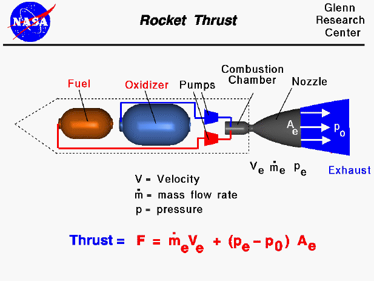

Raketmotoren werken door de dere wet van Newton,
iedere actie heeft een gelijke en tegenovergestelde reactie. de uitlaatgassen duwen de raket naar
voren, de uitlaatgassen werken naar achter en de reactie daarop werkt naar voren.
Je hebt verschillende soorten raketmotoren.
Je hebt bijvoorbeeld monopropellant, dat bestaat uit een gas dat onder een
hoge druk in een vloeistof veradert en wordt door een nozzle, een smalle hals met daatachter een mantel, geperst aan
het einde van de hals zet de vloeistof uit tot een gas en krijg je een drukkende kracht. Dit systeem wordt vooral gebruikt
in de ruimte voor last minute aanpassingen aan de koers van een ruimteschip, omdat ze minder goed werken in een atmosfeer.
De raket krijgt impuls (snelheid) naar voren door aan de achterkant massa uit te spuwen. (volgens de derde wet van newton)
Omdat in de meeste raketten ook een oxidant aanwezig is kunnen raketmotoren die afhankelijk zijn van een verbrandingsreactie ook in een vacuüm werken.
Raketmotoren heb je in alle soorten en maten, sommige hebben een korte mantel en zijn gespecialiseerd voor in een atmosfeer en sommige hebben een
lange mantel en zijn gespecialiseerd voor in een vacuüm.